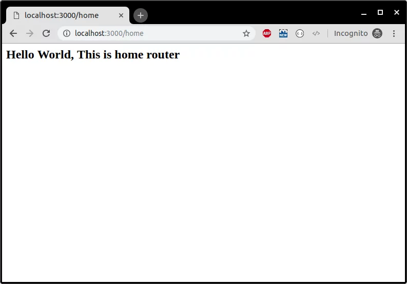

To begin creating the application, type the following lines into your terminal.
$ mkdir myapp
$ cd myapp
$ npm init
$ npm install express --save
First we need to install NodeJS if it is not already done. Head over to https://nodejs.org and install the latest LTS version.
Once NodeJS installed, create a new folder for our new NodeJS project. Navigate to your new folder in your terminal and execute npm init. You'll have to choose a title, description and other options for our project. I called my main file index.js.
That's all for the setup phase, let's start coding!
Let's launch a web server using ExpressJS! First, we need to install the express package. To install a package simply execute npm install --save , in our case, the package name is express so we will enter npm install --save express.
Now, we'll need to create our index.js file. This file will be the main file we will be using.
Let's start by adding our express module to our code.
const express = require('express')
Note: NodeJS now supports ESNext (ES6+). You can use let/const, async/await, and all the cool features available in new versions of JavaScript.
Now, let's initialize a new web server.
const app = express()
And we can finally launch our web server on the port of our choice. Let's say 3000. We'll also add an index route to our server.
const PORT = 3000
app.get('/', (req, res) => {
res.send('Hello World!')
})
app.listen(PORT, () => {
console.log(`Server listening on port ${PORT}...`)
})
Note: logs/warnings/errors will be displayed in the terminal used to launch your NodeJS application.
That's it! We're done. We have a running web server. Let's run our code by executing node index.js. Yay! The server is running! We can go to http://localhost:3000 and check if our server works.
Let's create a proper static HTML file to serve. We'll create a new folder called static and create hello.html. Let's add some code into it.
<!DOCTYPE html>
<html lang="en">
<head>
<meta charset="UTF-8">
<title>Hello!</title>
</head>
<body>
<h1>Hello Express thanks for making my life easy!</h1>
</body>
</html>
To serve static files, we'll need to add a simple line to our main file.
app.use(express.static(`${__dirname}/`))
Note: The global variable
__dirname
is the path to your NodeJS project folder.
If we relaunch our application with node index.js, and go to http://localhost:3000/hello.html, we should see the content of our HTML file!
Express is a web framework for Node.js. Using Express you can build web applications, REST APIs, frameworks quickly and efficiently.
First, create a new folder and initialize it with a blank package.json file using the command below.
npm init -y
To install the latest and stable version Express in your project, run the following command.
npm install --save express
Upon execution of this command, you will have the express framework installed in your project. Let's create a sample code to test out Express framework.
const express = require('express');
const app = express();
app.get('/',(req,res)=>{
res.send("Hello");
});
app.listen(process.env.port||3000);
console.log('Web Server is listening at port '+(process.env.port||3000));
Run this code using the following command.
node app.js
Navigate your browser to localhost:3000 to view the response of the web server.
Let's learn about Express routers.
Add the following code to an app.js file in the myapp directory. Now we have a Node.js application running with the express framework thanks to this simple configuration.
const express = require('express')
const app = express()
const port = 3000
app.use(express.static(`${__dirname}/static/`))
// app.get('/', (req, res) => {res.send('Hello World!')
// })
app.listen(port, () => {console.log(`Example app listening at http://localhost:${port}`)
This tutorial is for Node.js and Express Beginners. Express is a node.js web development framework which comes with various features you require to build end-to-end web application such as routing, parsing, render engine support, etc.
In this Node.js tutorial for beginners, we are going to cover the following topics:
Let's begin.
Routers are simply an endpoint of a server.
For example, chatbot.aramco.com.sa/home, here the home is a route.
We can perform various operations on routes using HTTP methods such as GET, POST, PUT, and DELETE.
Let's learn by doing it. Refer to the code shown below.
const express = require('express');
const app = express();
const router = express.Router();
router.get('/home',(req,res)=>{
res.send('Hello World, This is home router');
});
router.get('/profile',(req,res)=>{
res.send('Hello World, This is profile router');
});
router.get('/login',(req,res)=>{
res.send('Hello World, This is login router');
});
router.get('/logout',(req,res)=>{
res.send('Hello World, This is logout router');
});
app.use('/', router);
app.listen(process.env.port||3000);
console.log('Web Server is listening at port '+(process.env.port||3000));
Let's run our application, save the file, and run the code using the following command.
node app.js
You should see the following message in the terminal.
Web Server is listening at port 3000
Open your browser and visit the routes.

There are five types of middleware functions in the express.
We can use application middleware using the instance of the express. For example:
const express = require('express');
const app = express();
app.use((req, res, next)=>{
console.log('Time:',Date.now());
next();
});
app.listen(process.env.port||3000);
console.log('Web Server is listening at port '+(process.env.port||3000));
In a similar way as application middleware, we can use router middleware. For example:
const express = require('express');
const app = express();
const router = express.Router();
router.use((req, res, next)=>{
console.log('Time:',Date.now());
next();
});
router.get('/home',(req,res)=>{
res.send("ok")
});
app.use('/', router);
app.listen(process.env.port||3000);
console.log('Web Server is listening at port '+(process.env.port||3000));
We can use this middleware to catch errors.
app.use((err, req, res, next)=>{
res.status(500).send('Something broke!')
});
Express provides some middleware by default such as express.static(),express.json() and express.urlencoded().
We can use third-party middlewares built by awesome developers like you. Here is how we can install third-party middleware.
npm install --save body-parser
Here is how we can use this third-party express middleware.
const express = require('express');
const bodyParser = require('body-parser');
const app = express();
const router = express.Router();
router.get('/home',(req,res)=>{
res.send('
Hello World, This is home router
');
});
router.get('/profile',(req,res)=>{
res.send('
Hello World, This is profile router
');
});
router.get('/login',(req,res)=>{
res.send('
Hello World, This is login router
');
});
router.get('/logout',(req,res)=>{
res.send('
Hello World, This is logout router
');
});
// add middleware before routes
app.use(bodyParser.json());
app.use('/', router);
app.listen(process.env.port||3000);
console.log('Web Server is listening at port '+(process.env.port||3000));
Session management is a crucial part of the web application. We can use third-party middleware to achieve the session functionality in the Express framework.
Let's install the middleware.
npm install --save express-session
Here is a sample code to achieve sessions in Express.
const express = require('express');
const session = require('express-session');
const bodyParser = require('body-parser');
const router = express.Router();
const app = express();
app.use(session({secret:'ssshhhhh',saveUninitialized:true,resave:true}));
app.use(bodyParser.json());
app.use(bodyParser.urlencoded({extended:true}));
var sess;// global session, NOT recommended, only for demonstration purpose
router.get('/',(req,res)=>{
sess = req.session;
if(sess.email){
return res.redirect('/admin');
}
res.send('Ok');
});
router.post('/login',(req,res)=>{
sess = req.session;
sess.email= req.body.email;
res.end('done');
});
router.get('/admin',(req,res)=>{
sess = req.session;
if(sess.email){
res.write(`<h1>Hello ${sess.email}<!--</span-->h1><br>`);
// res.end('[+" logout'<="" span="">+'>Logout</a>');
res.end();
}
else{
res.write('Please login first.');
res.end();
}
});
router.get('/logout',(req,res)=>{
req.session.destroy((err)=>{
if(err){
return console.log(err);
}
res.redirect('/');
});
});
app.use('/', router);
app.listen(process.env.PORT||3000,()=>{
console.log(`App Started on PORT ${process.env.PORT||3000}`);
});</span></div></div>
There is another alternative to sessions that is widely used in mobile applications. It's a token-based authentication. We have covered the token-based authentication in the detail in this article.
To handle file uploads in the Express framework, we need to use the popular node module called multer.
First, install multer using the following command.
npm install --save express body-parser multer
Refer to the code below to handle file uploads in the Express framework.
var express = require("express");
var bodyParser = require("body-parser");
var multer = require('multer');
var app = express();
app.use(bodyParser.json());
var storage = multer.diskStorage({
destination:function(req, file, callback){
callback(null,'./uploads');
},
filename:function(req, file, callback){
callback(null, file.fieldname+'-'+Date.now());
}
});
var upload = multer({ storage : storage }).array('userPhoto',2);
app.post('/api/photo',function(req,res){
upload(req,res,function(err){
if(err){
return res.end("Error uploading file.");
}
res.end("File is uploaded");
});
});
app.listen(3000,function(){
console.log("Working on port 3000");
});
First, we initialized the multer with the disk storage i.e we are going to save our files in the machine where our Node server is running.
var storage = multer.diskStorage({
destination:function(req, file, callback){
callback(null,'./uploads');
},
filename:function(req, file, callback){
callback(null, file.fieldname+'-'+Date.now());
}
});
var upload = multer({ storage : storage }).array('userPhoto',2);
The **userPhoto** is the key that should be used in the HTML file element as an ID. Then, we simply called this function in the router.
upload(req,res,function(err){
if(err){
return res.end("Error uploading file.");
}
res.end("File is uploaded");
});
Node.js is a popular framework and used in tons of companies. In fact, we built this website using Node and Express. I highly recommend you to learn it in and out to upskill and expand your portfolio. I hope this Node.js tutorial is helpful to you. Please provide your feedback in the comment section.